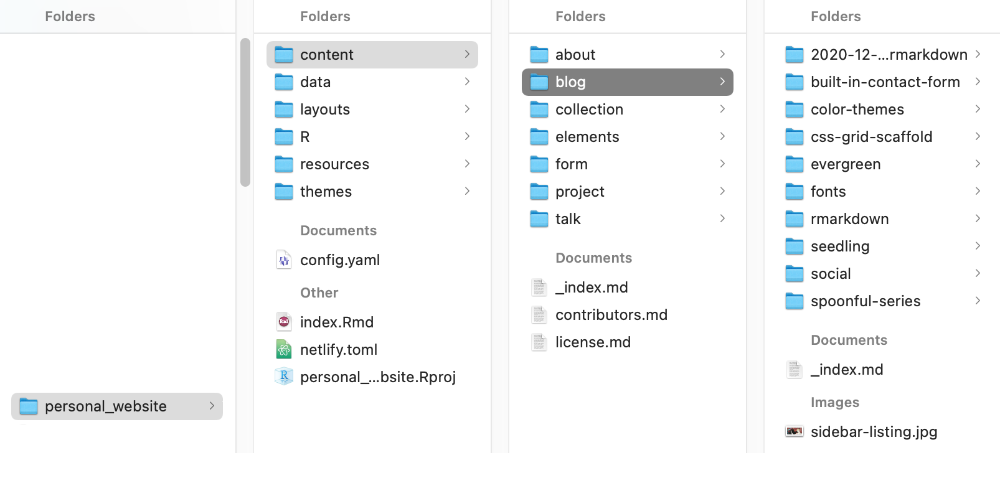

Setting up my webpage - you can do it too!
By Maria Sevillano
June 25, 2021
Aim
The purpose of this markdown is to generate my own page and document the process for peers in my research group and others.
Scope
In this document I will be following Allison Hill’s Up & running with blogdown in 2021 post. The steps here deviate a bit from her proposed 7 step guide, but I used it as a starting point. I will provide my own commentary and experience deploying a website from R for the first time. Wish me luck!
Background
First, let’s take a second to describe the tools that will be used to generate the website:
RStudio: Integrated development environment (IDE) for R.
This is home! There are a few parts of the workbench we will use extensively: source, console, terminal, and viewer pane.
Blogdown package:
This package builds websites from Hugo themes in R.
It allows you to generate a no nonsense website in minutes with straightforward functions.
This is ideal to share data analyses and visualizations made in R.

Hugo: open source static website generator.
GitHub: provider of software hosting and version control through Git.
We will use it to track changes for the website and host the page as well.
Step 1: Define your brand
Let’s take a few minutes to reflect on what type of site you are trying to build. Here are some guiding principles to map out your idea into a product.
Content
What information do you want to showcase?
What is the best format to present such information?
Shop around for web templates supported by blogdown and get inspired by what’s out there. This will help you structure the sections to include in your page.
Menu
If you decide on a website with extensive content, pick out a few sections you want to highlight.
An About me section is essential. Perhaps a tab containing your publications or projects might be relevant.
The menu provides a guide to anyone interacting with your content. We want to make it easy for us to display what we want and for people to find it.
However, we don’t want to overwhelm anyone, so as a rule of thumb, have at most 5 tabs in the navigation bar.
Homepage
This is the landing page for someone visiting the site, or the only page: choose your own adventure.
You can present everything resume style or create a short introduction and allow the visitor to navigate your page (through your menu). I will go with the latter, but be intentional with the content shared here to entice the visitor to explore more.
We are now equipped with the basics to start creating!
Step 2: Create your GitHub repo
Create new repository in GitHub.
I will be using github pages to host my site, hence the repo name.
Alternatively, you can use other names for your repository and host with Netlifly.
Your GitHub Pages is almost set!
Step 3: Create a project & site
- Install blogdown
install.packages("blogdown")Make site
File > New Project > New Directory > Website using blogdown
Alternatively, once you have a directory set as an R project, you can generate the directory structure with:
blogdown::new_site(theme = "yihui/hugo-lithium") This theme corresponds to the github path were the theme is hosted. The hugo-lithium theme is the default theme and it has a very minimalist feel to it. However it is not too popular, and its very simple aesthetics is not what I’m looking for.
I will generate my site with the hugo-apero theme. It’s beautiful and well documented. Take a look!
blogdown::new_site(theme = "hugo-apero/hugo-apero") What happens?
It creates the theme’s file structure.
It allows us to initiate the page locally and see changes live on your RStudio viewer pane.
You can also preview the site using:
blogdown::serve_site() My suggestion: restart R and serve site in between large changes.
We’ve created a template, let’s add/remove stuff!
Step 4: Add content
Using the function blogdown::new_post we’ll generate an Rmarkdown file inside the blog folder within the content directory
blogdown::new_post(title = "Hi Hugo",
ext = '.Rmd',
subdir = "blog")
Content creation workflow:
Knit file > Make changes to Rmarkdown file > re-knit
For sanity checks, take a look at all blogdown::check_* commands.
blogdown::check_content()We’ve generated content and can go crazy with blogging now!
Step 5: Build site
The following command will generate the public directory that contains our website (what will be hosted by github pages)
blogdown::hugo_build()Website update workflow (local):
blogdown::new_post() > Knit file > Make changes to Rmarkdown file > re-Knit > blogdown::hugo_build()
Step 6: Publish your site
Control your versions and move your public directory to your repository.
In the terminal:
- Initiate git in the /personal_website/public/ folder
git init
- Add and commit the changes
git add .
git commit -m "update website"
*Remember to change the commit message 😀
Set origin (this step is done only once!)
git remote add origin https://github.com/msevi/msevi.github.io.git
- Push your updates online
git push --set-upstream origin master
Website update workflow (remote):
blogdown::hugo_build() /> git add /> git commit /> git push
Your website is now live!
Step 7: Get your site in proper shape
At this stage, your creative vision really shines. If your like me, you might spend a lot of time playing around to make the site really yours. Some CSS and HTML knowledge can be helpful here, if you had a myspace, this is a walk in the park 🤣 Your best friend, though, is google!
With these steps you can now improve your online presence. 🎉
- Posted on:
- June 25, 2021
- Length:
- 5 minute read, 911 words
- See Also: